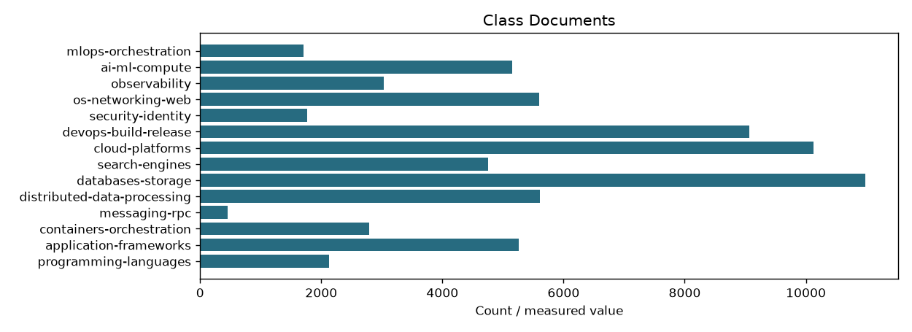
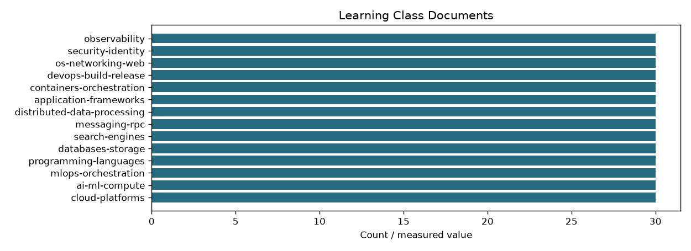
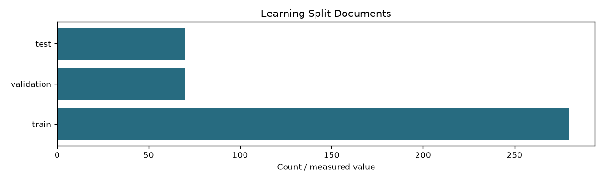
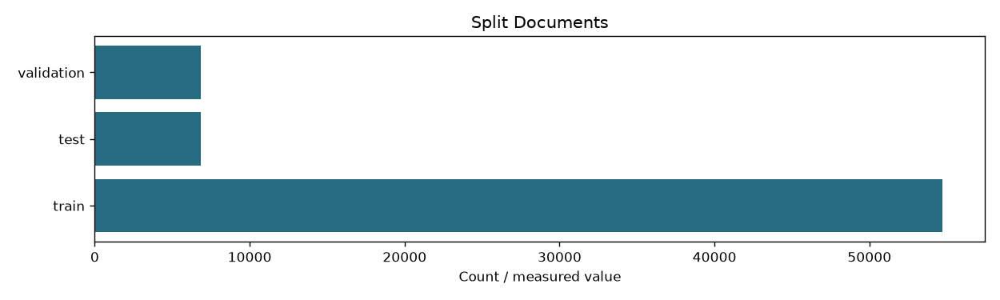

| learning_documents | 420 |
|---|---|
| learning_splits | {'train': 280, 'validation': 70, 'test': 70} |
| learning_labels_sha256 | e9ff13c8df76535b2838baa4139264dfe1abd5a37583331bbba731a2409203bf |
| documents | 68414 |
| classes | 14 |
| technologies | 76 |
| eligible_documents | 68414 |
| review_documents | 0 |
| independent_groups | 54729 |
| splits | {'train': 54722, 'test': 6846, 'validation': 6846} |
| class_counts | {'programming-languages': 2127, 'application-frameworks': 5259, 'containers-orchestration': 2786, 'messaging-rpc': 460, 'distributed-data-processing': 5614, 'databases-storage': 10977, 'search-engines': 4750, 'cloud-platforms': 10123, 'devops-build-release': 9065, 'security-identity': 1768, 'os-networking-web': 5599, 'observability': 3035, 'ai-ml-compute': 5148, 'mlops-orchestration': 1703} |
| label_status | source-domain labels from technology metadata |
| split_policy | class-stratified group allocation targeting 80/10/10; canonical version URLs and identical extracted text stay together |
| limitations | Grouping does not catch every near duplicate; held-out results would measure agreement with source labels, not semantic routing quality |
| text_policy | Resolve full extracted text from SQLite by doc_id; class labels and split are not model inputs. Fit vocabulary, statistics and centroids on training rows only. |
| classes_sha256 | edd68eb1ff4a87d1313f73a4a6539a95c62ea44288f6f5f2dc29e85340026056 |
| technology_map_sha256 | 55e1fd0731b9047a82c3d6613b83fce8b228222a20e95d5996c0031a095142b7 |
| stage | label_dataset_preparation |



